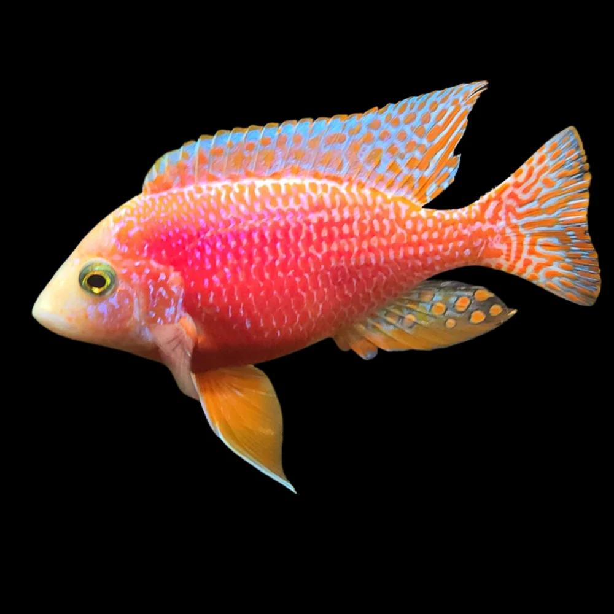

1. Cichlids
Scientific family: Cichlidae
Habitat: Freshwater lakes, rivers, swamps, and streams.
Diet: Varies by species; includes algae, plants, insects, and smaller fish.
Behavior: Some species are territorial.
Special feature: Many species protect their eggs and young. Some carry developing young in their mouths.
AMNH+2

2. Boeseman’s Rainbowfish
Scientific name: Melanotaenia boesemani
Family: Melanotaeniidae
Native range: Ajamaru Lakes region, West Papua, Indonesia.
Size: Males can reach approximately 9 cm standard length.
Diet: Small insects, crustaceans, and algae.
Behavior: Social schooling fish that often feed near the water surface.
Conservation:
Endangered, according to the 2019 IUCN assessment reported by FishBase.
FishBase+2
Research sources
American Museum of Natural History – Cichlids
San Diego Zoo – Cichlids
FishBase – Boeseman’s Rainbowfish
Tennessee Aquarium – Boeseman’s Rainbowfish